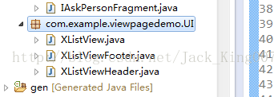

本节代码的基础是在以前的一个Demo上讲解的，现在复习基础，就好好的讲一下listview的上拉更多，下拉刷新，我就基于上一篇帖子继续讲。
如果了解结构 请看
上一篇帖子
这一次 用xlistview 来实现 也就是用开源项目 如果你想看基础 不用任何框架的话 可以看我以前的写的一篇帖子
说实话，对于一个安卓基础不扎实的人来说，最好把开源框架 看下源码 ，和作者介绍怎么使用的。不知道一件东西的原理是很恐怖的。 源码在最后放上。
先看效果图
这个Demo的结构是一个Viewpage套着Fragment so 我们要在Fragment 里面 进行填充一个listview 然后设置一个adapter 将数据设置上去 ，进行展示，
首先 xlistview
你可以这么想xListview 就是一个封装了下拉刷新和上拉更多的listview 首先 现在布局里面 显示吧
<?xml version="1.0" encoding="utf-8"?>
<RelativeLayout xmlns:android="http://schemas.android.com/apk/res/android"
android:layout_width="match_parent"
android:layout_height="match_parent"
android:background="#f2f2f2"
>
<LinearLayout
android:layout_width="match_parent"
android:layout_height="match_parent"
android:orientation="vertical" >
<com.example.viewpagedemo.UI.XListView
android:id="@+id/listview"
android:layout_width="match_parent"
android:layout_height="match_parent"
android:divider="@drawable/my_line_img"
android:cacheColorHint="@android:color/transparent"
android:fastScrollEnabled="true"
android:layout_marginTop="-3dp"
/>
<TextView
android:id="@+id/nodata_tips"
android:layout_width="fill_parent"
android:layout_height="fill_parent"
android:gravity="center"
android:text="@string/not_problem"
android:textColor="@color/black"
android:textSize="18sp"
android:visibility="gone" />
</LinearLayout>
<LinearLayout
android:id="@+id/progressbar_layout"
android:layout_width="wrap_content"
android:layout_height="wrap_content"
android:orientation="horizontal"
android:layout_centerInParent="true"
android:visibility="gone"
>
<ProgressBar
android:id="@+id/circle_progressbar"
style="?android:attr/progressBarStyleLarge"
android:layout_width="wrap_content"
android:layout_height="wrap_content"
android:indeterminate="true"
android:visibility="visible"
/>
<TextView
android:id="@+id/circle_progressbar_tips"
android:layout_width="wrap_content"
android:layout_height="wrap_content"
android:layout_gravity="center_vertical"
android:text="@string/loading_data_ing"
android:textColor="@color/gray"
android:textSize="18sp"
android:visibility="visible"
/>
</LinearLayout>
</RelativeLayout>

同时还有两个布局 都是xlistview 开头的 还有一些图片
首先 Fragment 要实现
IXListViewListener 接口
其中接口里面有 onLoadMore()方法
//上拉加载更多时触发,历史数据
onRefresh()方法
//下拉刷新的时候会触发该方法
在Fagment里的OncreateView 方法里填充布局 接着在onActivityCreated中填充数据
xListview 是通过 两个方法来开启 下拉刷新和加载更多功能的
listView.setPullLoadEnable(true);//
开启加载更多
listView.setPullRefreshEnable(true);// 开启下拉刷新
<span style="font-size:18px;color:#333333;"></span><pre name="code" class="java"> private List<IAsk> initData() {
List<IAsk> list = new ArrayList<IAsk>();
try {
for (int i = 0; i < 15; i++) {
IAsk ask = new IAsk();
ask.setTitle("今天准时吃饭！" + i);
ask.setDetails("为什么中午吃红烧肉不好？" + i);
ask.setAvatarId(R.drawable.user_icon);
String date = "2013-12-02 11:54:" + i;
ask.setAskTime(sdf.parse(date));
ask.setScore(20 + i);
ask.setAnswerCount(5 + i);
list.add(ask);
}
} catch (ParseException e) {
e.printStackTrace();
}
return list;
}Xlistview 封装的很好 其中 上拉更多 和下拉刷新 都单独成了一个方法 可以单独在里面加载数据
@Override
public void onLoadMore() {
// 上拉加载更多时触发,历史数据
IAsk ask;
try {
ask = new IAsk();
ask.setTitle("加载更多的问题标题");
ask.setDetails("加载更多的问题详情");
ask.setAvatarId(R.drawable.user_icon);
Random r = new Random();
int s = r.nextInt(60);
String date = "2013-12-02 11:52:" + s;
ask.setAskTime(sdf.parse(date));
ask.setScore(20);
ask.setAnswerCount(5);
list.add(ask);
adapter.notifyDataSetChanged();
listView.stopLoadMore();// 让加载更多的圈圈消失
} catch (ParseException e) {
e.printStackTrace();
}
} @Override
public void onRefresh() {
// 下拉刷新的时候会触发该方法
handler.postDelayed(new Runnable() {
@Override
public void run() {
try {
IAsk ask = new IAsk();
ask.setTitle("下拉刷新加载的最新问题标题");
ask.setDetails("下拉刷新问题的详情");
ask.setAvatarId(R.drawable.user_icon);
Random r = new Random();
int s = r.nextInt(60);
String date = "2013-12-02 14:45:" + s;
ask.setAskTime(sdf.parse(date));
ask.setScore(20);
ask.setAnswerCount(5);
list.add(ask);
Collections.sort(list, comparator);
listView.setRefreshTime(sdf.format(new Date()));
adapter.notifyDataSetChanged();
listView.stopRefresh();// 让下拉刷新的圈圈消失
} catch (ParseException e) {
e.printStackTrace();
}
}
}, 3000);
}
上全部代码吧
package com.example.viewpagedemo.Fragment;
import java.text.ParseException;
import java.text.SimpleDateFormat;
import java.util.ArrayList;
import java.util.Collections;
import java.util.Comparator;
import java.util.Date;
import java.util.List;
import java.util.Random;
import android.os.Bundle;
import android.os.Handler;
import android.support.v4.app.Fragment;
import android.view.LayoutInflater;
import android.view.View;
import android.view.ViewGroup;
import com.example.viewpagedemo.DateUtil;
import com.example.viewpagedemo.R;
import com.example.viewpagedemo.UI.XListView;
import com.example.viewpagedemo.UI.XListView.IXListViewListener;
import com.example.viewpagedemo.adapter.IAskAdapter;
import com.example.viewpagedemo.duomian.IAsk;
public class IAskAnswerFragment extends Fragment implements IXListViewListener {
private View rootView;
private XListView listView;
// 时间格式化类
private SimpleDateFormat sdf;
private List<IAsk> list;
private IAskAdapter adapter;
private Handler handler = new Handler();
// fragment被创建的时候调用
@Override
public void onCreate(Bundle savedInstanceState) {
super.onCreate(savedInstanceState);// super方法必须被调用
}
/**
* 相当于activity里的setContentView,当前fragment显示需要的layout文件
*/
@Override
public View onCreateView(LayoutInflater inflater, ViewGroup container,
Bundle savedInstanceState) {
rootView = inflater.inflate(R.layout.iask_answer_fragment, null);
return rootView;
}
/**
* 当activity创建的时候调用
*/
@Override
public void onActivityCreated(Bundle savedInstanceState) {
super.onActivityCreated(savedInstanceState);// super方法必须被调用
listView = (XListView) rootView.findViewById(R.id.listview);
listView.setPullLoadEnable(true);// 开启加载更多
listView.setPullRefreshEnable(true);// 开启下拉刷新
listView.setXListViewListener(this);
sdf = DateUtil.getSimpleDateFormat();
list = initData();
adapter = new IAskAdapter(getActivity(), list);
listView.setAdapter(adapter);
}
private List<IAsk> initData() {
List<IAsk> list = new ArrayList<IAsk>();
try {
for (int i = 0; i < 15; i++) {
IAsk ask = new IAsk();
ask.setTitle("今天准时吃饭！" + i);
ask.setDetails("为什么中午吃红烧肉不好？" + i);
ask.setAvatarId(R.drawable.user_icon);
String date = "2013-12-02 11:54:" + i;
ask.setAskTime(sdf.parse(date));
ask.setScore(20 + i);
ask.setAnswerCount(5 + i);
list.add(ask);
}
} catch (ParseException e) {
e.printStackTrace();
}
return list;
}
@Override
public void onRefresh() {
// 下拉刷新的时候会触发该方法
handler.postDelayed(new Runnable() {
@Override
public void run() {
try {
IAsk ask = new IAsk();
ask.setTitle("下拉刷新加载的最新问题标题");
ask.setDetails("下拉刷新问题的详情");
ask.setAvatarId(R.drawable.user_icon);
Random r = new Random();
int s = r.nextInt(60);
String date = "2013-12-02 14:45:" + s;
ask.setAskTime(sdf.parse(date));
ask.setScore(20);
ask.setAnswerCount(5);
list.add(ask);
Collections.sort(list, comparator);
listView.setRefreshTime(sdf.format(new Date()));
adapter.notifyDataSetChanged();
listView.stopRefresh();// 让下拉刷新的圈圈消失
} catch (ParseException e) {
e.printStackTrace();
}
}
}, 3000);
}
private Comparator<IAsk> comparator = new Comparator<IAsk>() {
@Override
public int compare(IAsk i1, IAsk i2) {
// 从小到大，从大到小
// 根据第一个参数小于、等于或大于第二个参数分别返回负整数、零或正整数。
if (i1.getAskTime().getTime() < i2.getAskTime().getTime()) {
return 1;
} else if (i1.getAskTime().getTime() > i2.getAskTime().getTime()) {
return -1;
} else {
return 0;
}
}
};
@Override
public void onLoadMore() {
// 上拉加载更多时触发,历史数据
IAsk ask;
try {
ask = new IAsk();
ask.setTitle("加载更多的问题标题");
ask.setDetails("加载更多的问题详情");
ask.setAvatarId(R.drawable.user_icon);
Random r = new Random();
int s = r.nextInt(60);
String date = "2013-12-02 11:52:" + s;
ask.setAskTime(sdf.parse(date));
ask.setScore(20);
ask.setAnswerCount(5);
list.add(ask);
adapter.notifyDataSetChanged();
listView.stopLoadMore();// 让加载更多的圈圈消失
} catch (ParseException e) {
e.printStackTrace();
}
}
}
点击下载源码